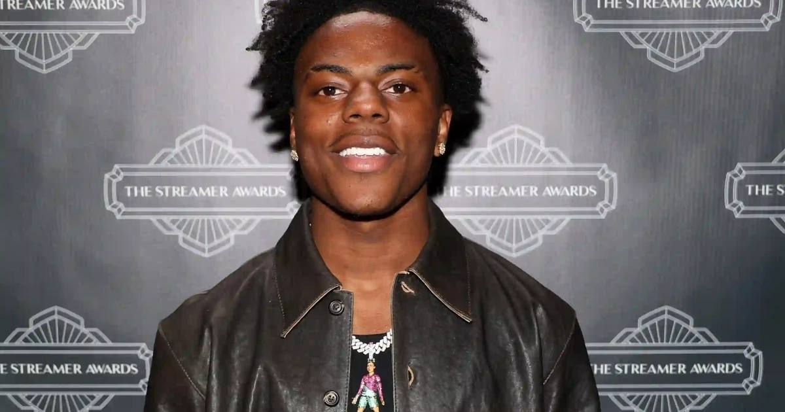

IShowSpeed three-peats as Streamer of the Year — Kai Cenat matches him with three awards of his own
IShowSpeed won Streamer of the Year for the third straight time at the sixth annual Streamer Awards in Los Angeles, taking three trophies. Kai Cenat matched him with three, Jynxzi took Gamer of the Year, and Quackity received the Legacy Award.

The night
The sixth annual Streamer Awards took place Thursday night in Los Angeles, hosted by QTCinderella and Caroline Kwan — moved up a week from November 17 so it would not collide with the launch of Grand Theft Auto VI — and the two biggest names in streaming split the night right down the middle.
IShowSpeed won Streamer of the Year for the third consecutive time, beating CaseOh, Joe Bartolozzi, Jynxzi and Stable Ronaldo. He took three awards in all: the big one, Best IRL Streamer, and Best Streamed Series for his World Cup Tour. Kai Cenat matched him trophy for trophy with three of his own: League of Their Own, Best Streamed Event for Streamer University, and Best Mainstream Collab for his stream with singer Tyla.
Jynxzi was named Gamer of the Year, beating Feinberg, iiTzTimmy, supertf and TheBurntPeanut. CaseOh took Best Variety Streamer. Katie B and Vanillamace each won three as well — Katie B for Best Breakout Streamer, Best Minecraft Streamer and Best Stream Duo with Vanillamace; Vanillamace for the Sapphire Award, Best Dressed and that same duo award. Quackity received the Legacy Award. Lacy won the new Biggest Crashout award, E11ysa took Rising Star, and ashswag beat Peller and Carter Efe for Best International Streamer.
The show around the show
Thirty-seven categories were decided by a mix of fan voting — 70 percent — and an industry panel for the rest. The night also had the strangest subplot of awards season: the show's trophies were stolen from the front porch weeks before the ceremony, and the show went on anyway. For the first time, Kick streamers were eligible for nominations.
Speed's three-peat is the headline, but the balance of the night is the story — four creators walked out with three awards each, and the two men at the top of the platform split the biggest prizes between them. Nobody ran away with the show. The show is the point.
What's next
The next date on streaming's calendar is not an awards show — it is November 19, when GTA 6 launches and half the creators in that room will be live playing it. Speed has already said he plans to stream his first session from New Zealand at midnight local time.
Sources
• Streamer Awards 2026 winners: IShowSpeed, Kai Cenat, Jynxzi, and more (Dexerto)
• How many awards did Kai Cenat and IShowSpeed win at The Streamer Awards 2026? (Sportskeeda)
• 2026 Streamer Awards (Wikipedia)
• The Streamer Awards 2026 Winners List: All Categories (TalkEsport)